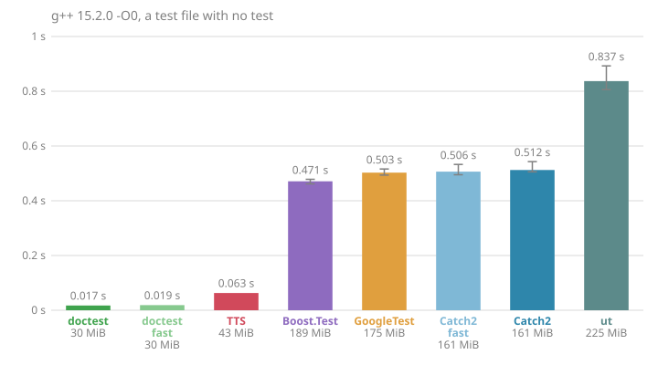
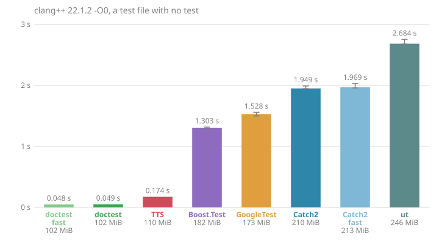
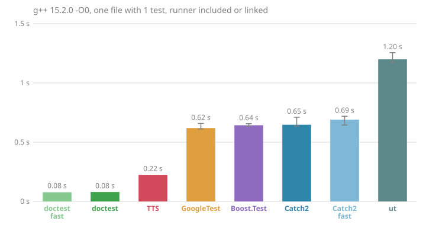
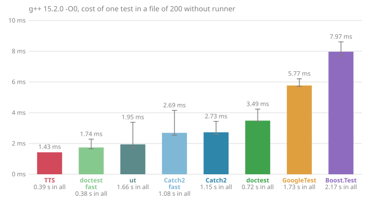
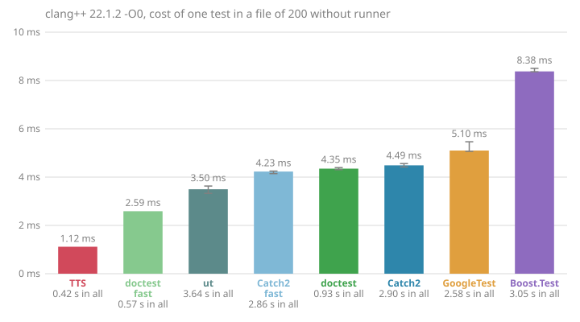

| | TTS 4.0 | ut 2.3.1 | doctest 2.5.3 | Boost.Test 1.90 | Catch2 3.16.1 | GoogleTest 1.18.0 |
|:--|:-:|:-:|:-:|:-:|:-:|:-:|
| En-têtes seuls | ✔ | ✔ | ✔ | ✔ | ✘ | ✘ |
| Tolérance en ULP | ✔ | ✘ | ✘ | ✘ | ✔ | ≈ |
| Balayage en ULP | ✔ | ✘ | ✘ | ✘ | ✘ | ✘ |
| Générateurs de données | ✔ | ≈ | ✘ | ✔ | ✔ | ✔ |
| Tests à la compilation | ✔ | ✔ | ✘ | ✘ | ✔ | ≈ |
| Sous-cas rejoués | ✔ | ≈ | ✔ | ✘ | ✔ | ✘ |
| Répartition entre jobs | ✔ | ✘ | ≈ | ✘ | ✔ | ✔ |
| Sortie JSON | ✔ | ✘ | ✘ | ✘ | ✔ | ✔ |
| Sortie TAP | ✔ | ✘ | ✘ | ✘ | ✔ | ✘ |
| Plantage attribué au cas | ✔ | ✘ | ✔ | ✔ | ✔ | ≈ |
| Arrêt d'un cas bloqué | ✔ | ✘ | ✘ | ≈ | ✘ | ✘ |
| Contexte des échecs | ≈ | ≈ | ✔ | ✔ | ✔ | ✔ |
| Style BDD | ≈ | ✔ | ✔ | ✘ | ✔ | ✘ |
| Filtre par nom | ✘ | ✔ | ✔ | ✔ | ✔ | ✔ |
| Fixtures | ✘ | ✘ | ✔ | ✔ | ✔ | ✔ |
| Ordre aléatoire | ✘ | ✘ | ✔ | ✔ | ✔ | ✔ |
| Matchers | ✘ | ✘ | ✘ | ✘ | ✔ | ✔ |
| Tests de mort | ✘ | ≈ | ✘ | ✘ | ✘ | ✔ |
---
## Bilan
### Pour les suites numériques
* Comparaisons en ULP, relatives et absolues.
* Cas sur des listes de types et sur des données générées.
* Traits pour adapter ses propres types, comme kyosu ou eve.
### Pour la CI
* Sorties JSON, JUnit et TAP.
* Répartition des cas entre jobs.
* Plantages et délais attribués au cas.
### Pour le développeur
* En-têtes seuls, C++20.
* Rien à construire ni à lier.
* Coût d'un cas, le plus bas des six :
* 2,1 ms avec g++
* 1,1 ms avec clang++
### Ressources
* Code : [github.com/jfalcou/tts](https://github.com/jfalcou/tts)
* Documentation : [jfalcou.github.io/tts](https://jfalcou.github.io/tts/)
* Licence : BSL 1.0